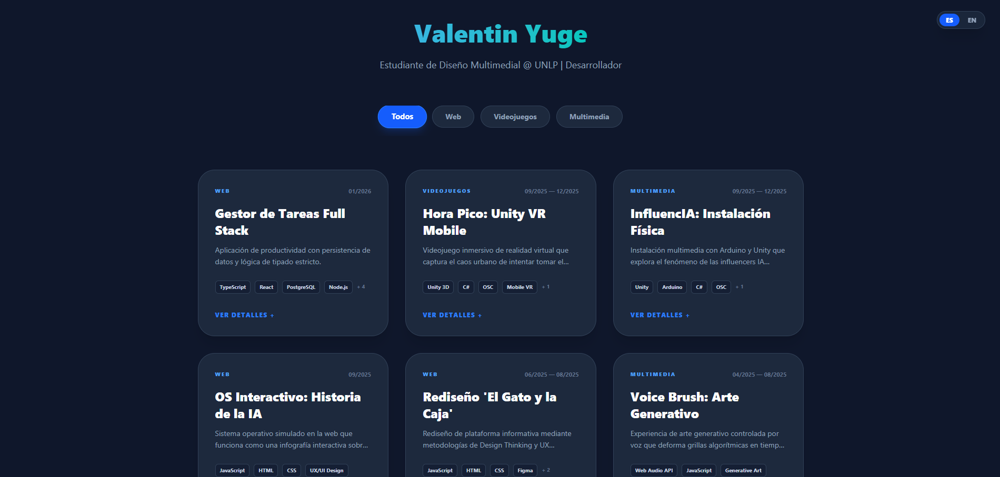

Datos del Alumno
- Nombre y Apellido: Valentin Yuge
- Legajo: 92715/7
- Docente: Christian Silva
Sobre mí
Mi nombre es Valentín Yuge, tengo 25 años y soy de La Plata.
Me gusta programar páginas web y videojuegos. Además de HTML y CSS, sé usar TypeScript, JavaScript, Tailwind, React, Node y Express. También practiqué con otras herramientas como Zustand y SQL.
También sé usar Unity, donde hice videojuegos 2D, 3D y VR, y la instalación interactiva de Taller 2 donde usé Arduino.
Proyectos
Tengo algunos proyectos ya armados; algunos son personales para práctica y otros son de la facultad. Estos son los que considero más destacados.
-
Videojuego VR
Proyecto del segundo cuatrimestre para la materia Tecnología Multimedia 2. Consiste en un videojuego de Realidad Virtual para dispositivos móviles, donde el movimiento del personaje se controla mediante el protocolo OSC.
-
Instalación Interactiva Influencers IA
Instalación física e interactiva desarrollada para Taller Multimedia 2. El sistema y la interacción del usuario se controlan a través de una placa Arduino y un lector de códigos QR.
-
Rediseño Pagina Web
Rediseño de interfaz para el sitio web de divulgación científica "El Gato y la Caja", realizado para la materia Taller Multimedia 2.2
-
Videojuego Unity
Mi primer proyecto en Unity, programado junto a un compañero para Taller Multimedia 1. Los controles físicos del juego se armaron adaptando la placa de un teclado de computadora.
Mi Portfolio
Estos proyectos y más están en mi portfolio, el cual también desarrollé yo.

Otras cosas sobre mi
Me gustan los deportes, cuando tengo tiempo siempre estoy viendo algo de futbol